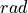
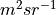
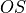

thomsonpy.config package
Package for the management of all constants, parameters and unit conversion factors needed for the Thomson scattering computation.
Note
All the parameters are in the International System of Units.
thomsonpy.config.octree_params module
Note
- The space is often divided in quadrants so we define our quadrants as:
Quadrant 1: x >= 0 & y >= 0
Quadrant 2: x <= 0 & y >= 0
Quadrant 3: x <= 0 & y <= 0
Quadrant 4: x >= 0 & y <= 0
- thomsonpy.config.octree_params.MAX_1 = array([2089020000, 2089020000, 2089020000])
Maximum coordinates for the first quadrant in
 .
.
- thomsonpy.config.octree_params.MAX_2 = array([ 0, 2089020000, 2089020000])
Maximum coordinates for the second quadrant in
.
- thomsonpy.config.octree_params.MAX_3 = array([ 0, 0, 2089020000])
Maximum coordinates for the third quadrant in
.
- thomsonpy.config.octree_params.MAX_4 = array([2089020000, 0, 2089020000])
Maximum coordinates for the fourth quadrant in
.
- thomsonpy.config.octree_params.MAX_COORD = 2089020000
Maximum bounds for octree according a
MAX_Rradius in.
- thomsonpy.config.octree_params.MAX_DATA = 1000
Maximum amount of data in each leaf node.
- thomsonpy.config.octree_params.MAX_LEVEL = 6
Maximum deep level of the octree.
- thomsonpy.config.octree_params.MAX_R = 2089020000
Maximum and minimum distance of octree data from the center of the Sun in
.
- thomsonpy.config.octree_params.MIN_1 = array([0, 0, 0])
Minimum coordinates for the first quadrant in
.
- thomsonpy.config.octree_params.MIN_2 = array([0, 0, 0])
Minimum coordinates for the second quadrant in
.
- thomsonpy.config.octree_params.MIN_3 = array([0, 0, 0])
Minimum coordinates for the third quadrant in
.
- thomsonpy.config.octree_params.MIN_4 = array([0, 0, 0])
Minimum coordinates for the fourth quadrant in
.
- thomsonpy.config.octree_params.MIN_COORD = 0
Minimum bounds for octree according a
MAX_Rradius in.
thomsonpy.config.paths module
- thomsonpy.config.paths.MODELS_PATH = 'data/projects/all-sun-maxr3.5/models/'
Path to the folder containing the final image models of the Thomson scattering computation.
- thomsonpy.config.paths.OCTREES_PATH = 'data/projects/all-sun-maxr3.5/data_structures/'
Path to the folder containing the binary objects with the data structures.
- thomsonpy.config.paths.OCTREE_DATA_PATH = 'data/projects/all-sun-maxr3.5/data_format/'
Path to the formatted data.
- thomsonpy.config.paths.PREDSCI_DATA_PATH = 'data/predictive_science/eclipse2021_mhd_final/corona/'
Path to the base folder of the raw models provided by Predictive Science Inc.
- thomsonpy.config.paths.PREDSCI_FILENAME = 'rho002.hdf'
Filename of the raw model.
- thomsonpy.config.paths.PROJECT_NAME = 'all-sun-maxr3.5'
Path to the base folder of the project in execution.
thomsonpy.config.solar_imager_params module
Note
- The coordinates system is centered on the center of the Sun and defined by the right-hand rule.
Y: vertical axis (|).
X: horizontal axis (—).
Z: axis aligned with the center of the Sun and the Observer point (·).
- thomsonpy.config.solar_imager_params.IMAGE_MAX = array([1.47716021e+09, 1.47716021e+09])
Maximum coordinates of the image in
.
- thomsonpy.config.solar_imager_params.IMAGE_MIN = array([0, 0])
Minimum coordinates of the image in
.
- thomsonpy.config.solar_imager_params.IMAGE_NUM_POINTS = 739
Number of points of the image according to the coordinates (
MAX_COORDandMIN_COORD) and theIMAGE_RESOLUTION.
- thomsonpy.config.solar_imager_params.IMAGE_RESOLUTION = 2000000
Image resolution in
.
- thomsonpy.config.solar_imager_params.MAX_COORD = 1477160208.0343215
Maximum common value for the coordinates of the image in
.
- thomsonpy.config.solar_imager_params.MAX_VIS_R = 2089020000
Maximum radius of image visualization in
.
- thomsonpy.config.solar_imager_params.MIN_COORD = 0
Minimum common value for the coordinates of the image in
.
- thomsonpy.config.solar_imager_params.OBSERVER = array([ 0, 0, 149713100000])
Position of the observer (the Earth) in
.
- thomsonpy.config.solar_imager_params.SUN_CENTER = array([0, 0, 0])
Position of the centre of the Sun in
.
thomsonpy.config.thomson_scattering_params module
- thomsonpy.config.thomson_scattering_params.EPSILON = 0.017453292519943295
Elongation angle in .
- thomsonpy.config.thomson_scattering_params.FIN_Z = 151105780000
Final/Upper limit for numerical integration of the Thomson scattering in
.
- thomsonpy.config.thomson_scattering_params.INCR_Z = 174085000.0
Step for numerical integration of the Thomson scattering in
.
- thomsonpy.config.thomson_scattering_params.INI_Z = 148320420000
Initial/Lower limit for numerical integration of the Thomson scattering in
.
- thomsonpy.config.thomson_scattering_params.NUM_Z = 16.0
Number of points to be computed in numerical integration of the Thomson scattering in
.
- thomsonpy.config.thomson_scattering_params.SIGMA_E = 7.95e-30
Differential cross section for perpendicular Thomson scattering in .
- thomsonpy.config.thomson_scattering_params.SOLAR_RADIUS = 696340000
Solar radius in
.
- thomsonpy.config.thomson_scattering_params.T_SOL = 5778
Solar temperature in
 .
.
- thomsonpy.config.thomson_scattering_params.WAVELENGTH = 5e-07
Observed wavelength in
.
- thomsonpy.config.thomson_scattering_params.X = 149713100000
Distance between the Observer (the Earth) and the Sun (distance ) in
.